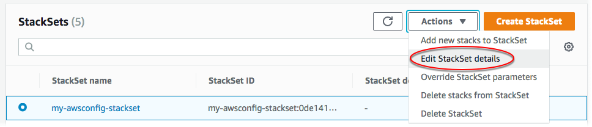

Les traductions sont fournies par des outils de traduction automatique. En cas de conflit entre le contenu d'une traduction et celui de la version originale en anglais, la version anglaise prévaudra.
Mettre à jour votre ensemble de piles
Vous pouvez mettre à jour votre ensemble de piles soit dans le AWS Management Console, soit en utilisant AWS CloudFormation les commandes du AWS CLI. Dans cette procédure, nous passons la fréquence de diffusion d'instantanés par défaut pour la configuration du canal de livraison de 24hours (24 heures) à 12hours (12 heures).
Pour remplacer les valeurs des paramètres pour les instances de piles spécifiques, reportez-vous à la section Paramètres de substitution sur des instances de piles.
Rubriques
Mettre à jour votre ensemble de piles à l'aide de la console AWS CloudFormation
Ouvrez la AWS CloudFormation console à l'adresse https://console.aws.amazon.com/cloudformation
. -
Dans le volet de navigation, choisissez StackSets.
-
Sur la StackSets page, sélectionnez l'ensemble de piles dans lequel vous avez crééCréer un ensemble de piles. Dans cette procédure, nous avons créé un ensemble de piles nommé
my-awsconfig-stackset. -
Une fois l'ensemble de piles sélectionné, choisissez Modifier StackSet les détails dans le menu Actions.
 -
Sur la page Choisir un modèle, choisissez si vous voulez mettre à jour le modèle en cours, spécifier une URL S3 vers un autre modèle ou charger un nouveau modèle dans AWS CloudFormation. Dans cette procédure, nous utilisons le modèle en cours. Choisissez Utiliser modèle en cours, puis choisissez Suivant.
-
Sur la page Spécifier StackSet les détails, modifiez les valeurs des paramètres et spécifiez les cibles de déploiement.
-
[Autorisations autogérées] Pour les Cibles de déploiement, choisissez Déployer les piles dans les comptes. Collez vos numéros de compte de destination dans la zone de texte, en séparant les numéros par des virgules.
[Autorisations gérées par le service] Pour les Cibles de déploiement, choisissez les comptes de votre organisation vers lesquels déployer.
-
Sélectionnez la région.
-
Modifiez la valeur du paramètre Fréquence de 24 heures à 12 heures.
Pour plus d'informations à ce sujet et sur les autres paramètres, qui spécifient les valeurs utilisées par AWS Config, consultez la section Configuration de la AWS configuration avec la console dans le manuel duAWS Config développeur.
Ne modifiez pas les autres paramètres. Dans le cadre de la présente procédure, nous ne configurons pas les mises à jour Amazon SNS.
Choisissez Next une fois que vous avez terminé.
-
-
Sur la page des StackSet options de configuration, aucune modification n'est nécessaire, mais vous pouvez mettre à jour, supprimer ou ajouter de nouvelles balises ici si vous le souhaitez. Pour plus d'informations sur la manière dont les balises sont utilisées AWS, consultez la section Utilisation des balises de répartition des coûts dans le Guide deAWS Billing and Cost Management l'utilisateur. Vous pouvez également gérer la configuration d'exécution pour spécifier si les opérations non conflictuelles sont StackSets exécutées simultanément et si les opérations contradictoires sont mises en file d'attente. Une fois les opérations conflictuelles terminées, StackSets démarre les opérations en file d'attente dans l'ordre des demandes.
Note
Si des opérations sont déjà en cours ou mises en file d'attente, met en StackSets file d'attente toutes les opérations entrantes, même si elles ne sont pas conflictuelles.
Vous ne pouvez pas modifier la configuration d'exécution de votre ensemble de piles pendant que des opérations sont en cours d'exécution ou en file d'attente pour cet ensemble de piles.
Conservez les autorisations inchangées, puis choisissez Next (Suivant).
-
Sur la page Set deployment options (Définir les options de déploiement), conservez la valeur par défaut 1 et By number (Par nombre) pour Maximum concurrent accounts (Nombre maximal de comptes en parallèle). Conservez la valeur par défaut 0 pour Failure tolerance (Tolérance aux pannes) et gardez l'option par défaut By number (Par nombre). Choisissez Suivant.
Note
Vous ne pouvez pas modifier les comptes et régions ici. Ainsi, vous ne pouvez pas déployer de modifications de l'ensemble de piles dans les piles uniquement dans certains comptes et certaines régions.
-
Sur la page Review, vérifiez vos choix et les propriétés de votre ensemble de piles. Pour effectuer des modifications, choisissez Edit (Modifier) dans l'angle supérieur droit d'une zone dans laquelle vous souhaitez modifier des propriétés. Avant de pouvoir mettre à jour l'ensemble de piles, vous devez cocher la case dans la zone Capacités pour confirmer que certaines des ressources que vous mettez à jour avec l'ensemble de piles peut nécessiter de nouvelles ressources et autorisations IAM. Pour plus d'informations sur les autorisations potentiellement requises, consultez la section Reconnaissance des ressources IAM dans les AWS CloudFormation modèles de ce guide. Lorsque vous êtes prêt à créer votre ensemble de piles, choisissez Submit (Soumettre).
AWS CloudFormation commence à appliquer vos mises à jour à votre ensemble de piles et affiche l'onglet Opérations de la page de détails de l'ensemble de piles
-
Vous pouvez afficher la progression et le statut des opérations de mise à jour dans l'onglet Operations. Vous devriez voir le paramètre Frequency (Fréquence) mis à jour dans l'onglet Parameter (Paramètre).
Mettez à jour votre ensemble de piles à l'aide du AWS CLI
Lorsque vous agissez en tant qu'administrateur délégué, vous devez définir le paramètre --call-as sur DELEGATED_ADMIN chaque fois que vous exécutez une commande StackSets.
--call-asDELEGATED_ADMIN
Exécutez la update-stack-set AWS CLI commande pour apporter des modifications à votre ensemble de piles. Dans cette procédure, nous mettons à jour la valeur du paramètre MaximumExecutionFrequency. Pour plus d'informations sur les noms et les valeurs des paramètres permettant de créer ou de mettre à jour une AWS Config règle, reportez-vous put-config-ruleà la AWS CLI
référence. Pour modifier les valeurs des paramètres du modèle, ajoutez le paramètre --parameters. Pour plus d'informations sur ce que vous pouvez spécifier comme valeur--parameters, consultez Parameterla référence de l' AWS CloudFormation API et update-stackla référence desAWS CLI commandes.
Dans l'exemple de commande présenté ici, nous mettons à jour le stack set en utilisant --parameters ; plus précisément, nous changeons la fréquence de diffusion des instantanés par défaut pour la configuration du canal de diffusion de TwentyFour_Hours à Twelve_Hours. Etant donné que nous continuons d'utiliser le modèle en cours, nous ajoutons le paramètre --use-previous-template.
-
Exécutez la commande suivante. Pour
stack set name, spécifiez le nom d'ensemble de pilesmy-awsconfig-stackset.Spécifiez la tolérance aux pannes et le nombre maximal de comptes en parallèle en définissant
FailureToleranceCountsur0etMaxConcurrentCountsur1dans le paramètre--operation-preferences, comme indiqué dans l'exemple suivant. Pour appliquer des pourcentages au lieu de nombres, utilisezFailureTolerancePercentageouMaxConcurrentPercentage. Dans le cadre de la présente procédure, nous n'utilisons pas des pourcentages mais des nombres.Note
La valeur de
MaxConcurrentCountdépend de la valeur deFailureToleranceCount.FailureToleranceCountest au maximum supérieur àMaxConcurrentCount.[Autorisations autogérées] Fournissez les ID de compte ciblés par la mise à jour.
aws cloudformation update-stack-set --stack-set-namemy-awsconfig-stackset--use-previous-template --parameters ParameterKey=MaximumExecutionFrequency,ParameterValue=TwentyFour_Hours\\,Twelve_Hours--operation-preferencesFailureToleranceCount=0,MaxConcurrentCount=1--accounts '["account_ID_1","account_ID_2"]'[Autorisations gérées par le service] Indiquez l'ID d'organisation (racine), les ID d'unité d'organisation ou les identifiants de compte AWS des organisations que vous souhaitez cibler par votre mise à jour.
aws cloudformation update-stack-set --stack-set-namemy-awsconfig-stackset--use-previous-template --parameters ParameterKey=MaximumExecutionFrequency,ParameterValue=TwentyFour_Hours\\,Twelve_Hours--operation-preferencesFailureToleranceCount=0,MaxConcurrentCount=1--deployment-targets OrganizationalUnitIds='["ou-rcuk-1x5j1lwo", "ou-rcuk-slr5lh0a"]' --regions '["eu-west-1"]' -
Vérifiez que l'ensemble de piles a bien été mis à jour en exécutant la commande
describe-stack-set-operationpour afficher l'état et les résultats de l'opération de mise à jour. Pour--operation-id, utilisez l'ID d'opération qui a été renvoyé par la commandeupdate-stack-set.aws cloudformation describe-stack-set-operation --operation-idoperation_ID